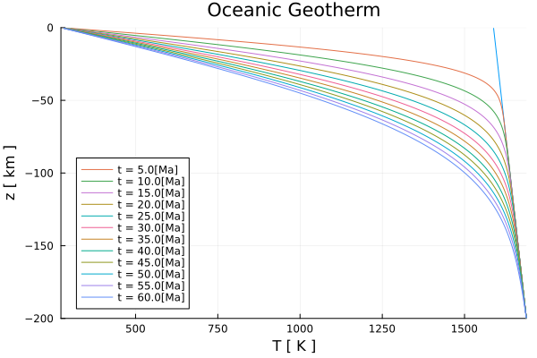
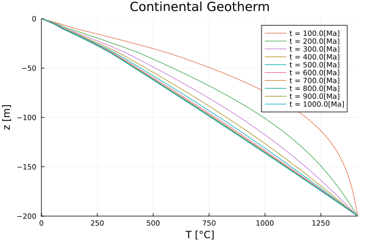
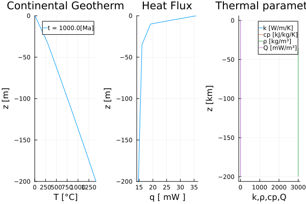

Examples
Diffusion Equation
Geotherm (1D)
The 1-D temperature profiles of a geotherm are calculated by solving the conductive part of the 1-D temperature equation (so far only including a radiogenic heat source) using variable thermal parameters with a proper conserving finite difference scheme. That is, the heat flow is calculated on the vertices and the temperature is defined on the centroids, respectively. The discretization scheme for variable thermal parameters is choosen to solve for a temperature profile of a continental lithosphere with upper, lower crust, and mantle. The 1-D temperature equation is given by:
\[\begin{equation} \rho c_{p} \frac{\partial{T}}{\partial{t}} = \frac{\partial{}}{\partial{y}}\left(k \frac{\partial{T}}{\partial{y}}\right) + \rho H, \end{equation}\]
where $\rho, c_{p}, T, t, k, H,$ and $y$ are the density [ $kg/m^3$ ], the specific heat capacity [ $J/kg/K$ ], the temperature [ $K$ ], the time [ $s$ ], the thermal conductivity [ $W/m/K$ ], the heat generation rate per mass [ $W/kg$ ], and the depth [ $m$ ] respectively. For values and references of the given thermal parameters see OceanicGeotherm_1D.jl and ContinentalGeotherm_1D.jl.
A proper conservative finite difference scheme means that the 1-D vertical heat flux and the thermal conductivity k are defined on the vertices and q is defined as:
\[\begin{equation} \left. q_{y,m} = -k_m \frac{\partial T}{\partial y}\right\vert_{m},\ \textrm{for}\ m = 1:nv, \end{equation}\]
where $nv$ is the number of vertices.
Oceanic

Figure 1. ...

Figure 2. Oceanic Lithosphere. LEFT: Temperature profile [K] for an oceanic lithosphere of 60 Ma of age and constant thermal boundary conditions at the top and bottom. The blue line shows the initial temperature profile. The yellow dashed line shows the solution for a half-space cooling model. RIGHT: Heat flux $q_y$ [ $mW/m^2$ ] with depth. The parameters of this model are defined as the default values in the routine OceanicGeotherm_1D.jl.
Continental

Figure 3. ...

Figure 4. Continental Lithosphere. LEFT: Temperature profile for a continental lithosphere of 1000 Ma of age with constant upper and lower thermal boundary conditions. MIDDLE: Heat flux with depth. RIGHT: Thermal parameter for the lithosphere setup: thermal conductivity [ $k$ ], specific heat [ $c_p$ ], density [ $ρ$ ], and volumetric heat generation rate [ $Q$ ].
Gaussian Diffusion
<!– Information missing! –>...

Figure 5. Diffusion of an initial Gaussian temperature distribution....
Backward Euler
-> A gaussian diffusion using the defection correction method. The results are compared to the analytical solution.
Forward Euler
-> A gaussian diffusion using an explicit formulation. The results are compared to the analytical solution.
Gaussian Diffusion
-> Script to solve a 2-D gaussian diffusion using multiple different finite difference schemes and resolutions. The results are compared to the analytical solution and the final plot shows a resolution test including each finite difference scheme.
Resolution Test Poisson Problem
-> Resolution test for a 2-D Poisson Problem.
Poisson Variable Parameters
-> 2-D Poisson Problem with variable thermal parameters.
Advection Equation
Momentum Equation
Channel Flow
<!–
Channel Flow
  Assuming the horizontal pressure gradient is constant and flow within a channel is only driven by the pressure and/or by a constant horizonal velocity at the surface (or at the bottom, or both), the stokes equation describes the horizontal flow velocity within the channel and simplifies to:
$
\frac{\partial P}{\partial x} = \frac{\partial \tau_{x,z}}{\partial z} $,
where P is the pressure and $\tau_{x,z}$ is the deviatoric shear stress, which is defined as:
\[\tau_{x,z} = 2 \eta \dot{\varepsilon}_{x,z} = \eta \frac{\partial v_x}{\partial z}\]
,
where $\eta$ is the dynamic viscosity and $\dot{\varepsilon}_{x,z}$ is the deviatoric shear strain-rate, which is defined as:
\[\dot{\varepsilon}_{x,z} = \frac{1}{2}(\frac{\partial v_x}{\partial z} + \frac{\partial v_z}{\partial x})\]
.
For the given setup I can assume that the vertical velocity is zero and thus equation (3) simplifies to the last expression of equation (2).
  This directory contains a script to calculate the horizontal velocity for a two-dimensional Couette(-Poiseuille) channel flow with constant and logarithmically, with depth varying viscosity and to compare the numerical solution with its analytical solution. The depth-dependent viscosity is defined as:
\[\eta = \eta_0 exp(log(m) \frac{H-z}{H})\]
,
where m is the viscosity ratio of $\frac{\eta_1}{\eta_0}$, $\eta_0$ and $\eta_1$ are the bottom and surface viscosities, respectively, H is the model height, and z the depth.
 Considering the definition of the viscosity as given in equation (4), one can derive an analytical solution of the horizontal velocity from the 1-D stokes equation in x-direction by twice integrating equation (1). The analytical solution with depth depends on the viscosity ratio m, the horizontal pressure gradient $\frac{\partial P}{\partial x}$, and the shear velocity at the surface $v_{x,0}$. For an upward pointing coordinate system (z positive) the analytical solution is given as:
\[v_{x,ana} =-\frac{1}{2 \eta_0} \frac{\partial P}{x} (Hz - z^2) + v_{x,0}\frac{z}{H}\]
,   if $m = 1$, and     (5)
\[v_{x,ana} = -\frac{\partial P}{\partial x} \frac{H}{\eta_0 log(m)} (\frac{m^{-\frac{z}{H}}}{m-1}(z(m-1)+H) - \frac{H}{m-1})-m^{-\frac{z}{H}} m \frac{v_{x,0}}{m-1} + \frac{v_{x,0}m}{m-1}\]
,    if $m \neq 0$.    (6)
 The numerical solution is calculated using fixed boundary velocities, which are defined by the analytical solution of the horizontal velocity as defined in equations (5) and (6) and I simply flip the analytical solution so that it fits to the downward point coordinate system I use in the code. –>
FallingBlockBenchmark()
-> A sript, solving the falling block benchmark for a viscosity range from -6 to 6 order of magnitude. The script stores the sinking velocity of the block at the initial configuration and the final marker distribution for models with a viscosity ration over and equal 0.
{kind=link}
{kind=link}
FallingBlockConstEta_DC()
-> A sript, solving the falling block problem assuming a constant viscosity and using the defect correction method.
FallingBlockVarEta_DC()
-> A sript, solving the falling block problem assuming a variable viscosity and using the defect correction method. The advection is only provided with tracers